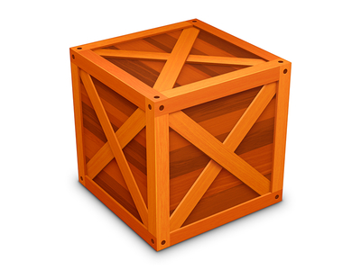
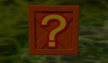
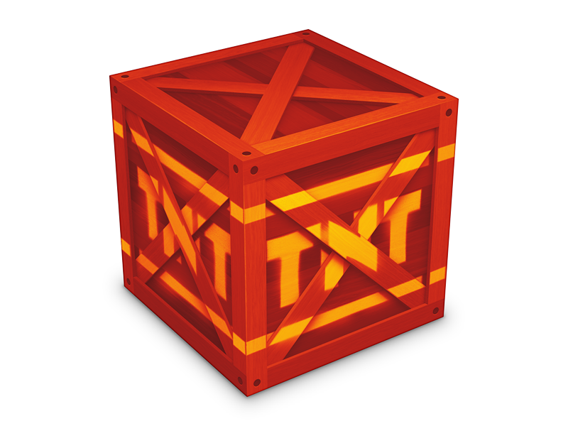
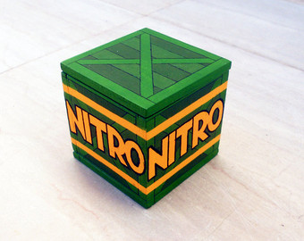
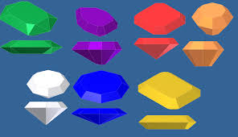
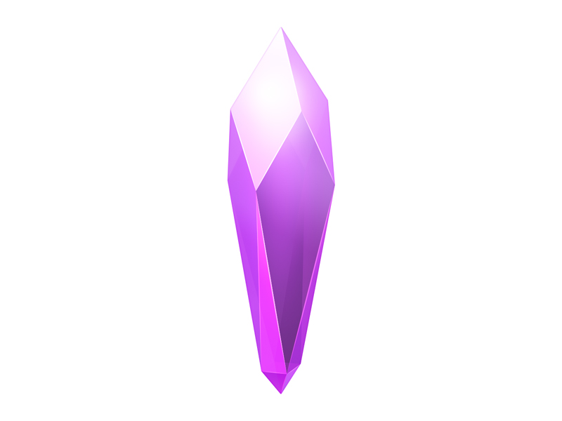
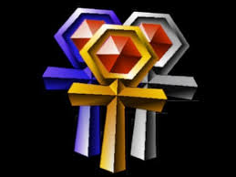

|  | Caixa BásicaA Caixa Basica é um caixote na série Crash Bandicoot. Esta caixa geralmente contêm quantidades muito baixas de Frutas Wumpa. Qualquer método de ataque poderia quebrar essa caixa. Em Crash Tag Team Racing eles são vistos contendo moedas Wumpa. Eles muitas vezes aparecem em pilhas neste jogo. |
|  | Caixa InterrogaçãoA Caixa Interrogação é um tipo muito comum de caixa na série Crash Bandicoot, geralmente contendo pelo menos sete ou oito Frutas Wumpa (ou, ocasionalmente, uma vida ou um Aku Aku). |
|  | Caixa TNTO TNT é um Caixa explosiva que aparece em vários jogos de crash . É de longe uma das caixas mais perigosas, mesmo que destruí-la é necessário para obter todas as caixas no nível. Ao contrário de grades Nitro, estes não têm detonadores no final do nível. A maioria dos métodos de ataque que fará Bandicoot final de mortos, mas por saltar sobre ele, ou também dar-lhe uma submarina encostada ele lhe fará uma contagem regressiva 3-2-1 antes de explodir dando uma chance de escapar. |
|  | Caixa NitroCaixas Nitro são poderosos, engradados explosivos, cheios de nitroglicerina, vistos na série Crash Bandicoot.Estas caixas explosivas são extremamente sensíveis e não devem ser tocados na maioria das condições, a menos que fornecido com invencibilidade. Estes são os Caixas mais perigosas que existem. Em Crash of the Titans para DS em que aparecem apenas com "N" um deles. Para destruí-los no final de um nível, você deve pressionar o interruptor de Nitro. É semelhante ao do Crate TNT, excepto que não tem a contagem decrescente 3-1 antes de explodir. |
|  | GemasGemas são pedras colecionáveis que aparecem ao longo da série Crash Bandicoot. Gems são tipicamente diferente dos Cristais de Poder , como eles são mais poderosos, em seguida, os cristais como afirma N. Brio em Crash Bandicoot 2. Quer que as informações sejam precisas a partir de N.Brio é uma questão como parece que Uka Uka quer os cristais mais do que o Crash recolhe essas pedras preciosas ao longo da série. Eles normalmente são recolhidos através de diferentes meios e tarefas especiais, como quebrar todas ascaixas em um determinado nível. As pedras preciosas também aparecem em cores diferentes, que são mais especial e raro do que as jóias regulares. Em Crash Twinsanity há 6 gemas escondidas em cada nível de Crash para recolher o que contam para completar 100%. |
|  | CristaisCristais (conhecidos como Cristais de Poder em Twinsanity e CTTR) são vistas na maioria dos todos os jogos de Crash como fonte de energia, muito parecido com pedras preciosas . Eles têm sido usados na série desde o Crash Bandicoot 2: Cortex Strikes Back . No estado de fato, há 25 cristais de escravos, um cristal Mestre e o cristal de energia Super Big , estes cristais foram utilizados principalmente para o mal para controlar todos Dr. Cortex máquinas e gagdets mas agora usado principalmente para o bem para ajudar Crash Bandicoot salvar o mundo do Time Machine Twister e parar as Elementals . No entanto, há 28 cristais em Bash Crash . Nesse jogo, os cristais apparantly tem o poder de mudar o ambiente nos estádios, além de alterar suas regras. Após Crash Twinsanity os cristais foram substituídos com o Mojo que foi usado para máquinas de potência Cortex e para criar o seu mutante exército. |
|  | ReliquiasReliquias são itens que são alcançados depois de obter um tempo recorde no Time Trial modo abaixo de um certo tempo.Relíquias de safira são mais fáceis de obter e ter mais tempo para obtê-los.Depois vem a Relic Ouro e, finalmente, a Relic Platinum que são mais difíceis de obter e ter o menor tempo para obtê-los. Relíquias melhores são concedidos quando o jogador completar um determinado curso em um tempo melhor, batendo o recorde estabelecido pela CPU. |
os conteudos foram extraidos do site: Itens Crash